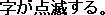

「HP管理人に１００の質問」に答えてみました。
が…元のURLが見つからなくなってしまいました。閉鎖した?
2004.10.9作成
2005.2.24改訂
2005.5.5改訂
０１．あなたのHNを教えてください。またそのHN由来は？
―いかづちSqueak。ライチュウが好きなのでそれから。
０２．自己紹介を。
―りかけいのおとこの いかづちが あらわれた！
いかづちは ライチュウを くりだそうとしている！
０３．あなたのHPのタイトルは？
―「ホームページ作成中…」改め「WentWayUp」
０４．そのHP名の由来、参考にしたものなどあれば教えてください。
―ポケモン金銀英語版のメッセージです。日本版の「ぐーんとあがった」に対応します。
この言葉の響きが好きだったんですがADV版からは言葉が変わっちゃってます。
０５．あなたのHPのジャンルは？
―ポケモン、ポケモンに関連するもの、ポケモンに関連するものに関連するもの、他。
０６．あなたのサイトのURLを教えてください。
―http://www015.upp.so-net.ne.jp/wwu/pokemon/です。
見て分かるとおり「WentWayUp」というタイトルは最初から決まってました。
０７．あなたのHPのコンテンツの羅列をお願いします。
―個体値エグザミナー、100の質問、ポケモン名前由来図鑑、ほか小物。
０８．あなたのHPの見所、力を注いでいる所はどこですか？
―ポケモン図鑑は力を注いでます。
０９．自分のHPの完成度は100％中何％ですか？
―50％
１０．あなたが今運営しているHPを作ったきっかけは？
―PCを買い、インターネットにつながった事。
１１．HPはどうやって作成していますか？（タグ・ソフト名）
―メモ帳にタグ打ち。いくつかのタグは辞書登録済み。最近どんどん新たなタグを辞書登録している。
Mozzilaのcomposerを使ってみたが、1文字づつ＆＃…；で書かれたのでやめた。
１２．HPを作成する際気を使っている点をあげてください
―取り敢えず、やめないこと。
１３．あなたのHPの推奨環境があれば教えてください
―Unicordの文字が表示できること。
あとフォントとかはWindows前提で書いてます。
１４．どんな環境でも普通に見られるように意識していますか？
―一応。でも知識がないからできてないと思う
１５．HPを作成する際、よく使用する色は何ですか？
―#C0FFEE→■。通称コーヒー色。
あとは151.151.251→■とか151.251.251→■
１６．自分のHPのデザインは気に入っていますか？
―そうですね、わりと。でも凄いとこは凄いですからね。あんなのできればいいと思ってます。
１７．HP作成に重宝しているソフトやサイトがあったら教えてください。
―Google。
１８．HPを作成する際、フリー素材などを利用していますか？
―いいえ。
１９．Yes⇒どんな感じの素材が好きですか？No⇒それは何故ですか？
―自分で作るのが好きなので。あと著作権表示が鬱陶しいから。
２０．あなたの現在使用しているサーバはどこですか？
―So-net(プロバイダから)
２１．何故そのサーバを選んだのですか？
―無料なので
２２．サーバについて満足している点、不満足な点など感想を・・・
―CGI禁止がちょっと不満。
２３．毎月どの位の金額をHPの為に使っていますか？（サーバ代、レンタル料、参考書籍等含めて）
―0。金をかけてまでHPを作りたいとは思わない。
２４．HPの移転経験はありますか？
―なし。
２５．Yes⇒何故移転したのですか？またそれにまつわるエピソードは？No⇒移転を考えたことはありますか？
―今の10MBが足りなくなったら移転するでしょう。あるいはプロバイダをso-netから変えたら移転することになりますね。
２６．HPを閉鎖しようと思ったことはありますか？ある方はどんな時にそう思ったのですか？
―まだないです。
２７．今運営しているHPを閉鎖するとしたら、どのような形で閉鎖しますか？（事前告知？いきなり消滅？メール連絡・・など）
―可能な限り早くトップページに告知。後任を消極的に募集。
２８．あなたは自分のHPの宣伝活動をしていますか？
―よくいくサイトに書くぐらいですね。
２９．検索エンジンなどには自分からどんどん登録する方ですか？
―Googleには登録してみました。
３０．あなたのHPの一ヶ月あたりの訪問者数はどの位ですか？
―900人ぐらいのようです。←と書いてましたが大嘘こいてました。自分を入れても500人です。
３１．アクセス数は気になりますか？
―はい。
３２．アクセス解析は設置していますか？設置している方は設置理由や解析のどの部分を注意してみているか教えてください。
―いいえ。
３３．キリ番をあなたのHPではどのように扱っていますか？
―澱堂に飾ります。
３４．あなたのHPへリンクを貼る時の約束事はありますか？（報告の必要・不必要・URLの指定・リンク不許可ジャンル）
―基本的にリンクは自由だと考えます。その上で、できれば報告していただけるとありがたいかな、と。
３５．相互リンクの取り扱いはどのようにしていますか？またその理由。
―相互でないとリンクするなと言われれば従います。
３６．あなたのHPのバナーをよかったらここに貼ってください。

―サイトのTOPと同じ字です。実はこの字のフォントは自作だったりします。
３７．バナーの作成法は？
―GIMP+TTFエディタ。
３８．HPのバナーは何種類ありますか？
―2つですが最初のは封印しました。もっともデータは消してないのでアドレスが分かれば見えますよ。
３９．バナーへの直リンクは許可していますか？その理由は？
―ご自由に。WEB上のものは何でもリンクする権利があると考えるので。
４０．あなたの「リンク」に関する考え方を教えてください。
―原則自由。
４１．HPを閲覧した人から感想のメールをもらったことはありますか？ある方は一ヶ月あたりどのくらいメールが届くか教えてください。
―ないですね。
４２．メールにはきちんと返信していますか？
――
４３．ウイルスメールはよく届きますか？
―ないですね。
４４．あなたは他のサイトでよく感想や意見などのメールを送りますか？
―メールはあまり。掲示板に書き込みならよくする。
４５．「自分にメールを送る際、注意して欲しいこと」を書いてください。
―分かりやすい題名をつける。
４６．あなたのHPでは掲示板を設置していますか？その理由は？
―はい。メールより手軽に意見を言える場だと思うので。
４７．あなたのHPの掲示板はどんな感じで使用されてますか？（利用状況・マナーの良さ悪さなど）
―もっと書き込みがあるとうれしいな…。
４８．「掲示板を利用する際守って欲しいこと」を書いてください。
―荒らさないでね。
４９．HPを荒らされたことがありますか？その時どう対処しましたか？
―なし。
５０．HPを荒らされないように何か気を使っていますか？
―なし。
５１．オフ会を自主開催・参加したことがありますか？その理由は？
―「かけるのページ」のオフに参加しました。理由ですか?かけるさんと気が合うので。
５２．Yes⇒オフ会の感想・またやってみたいか？などNo⇒今後やる予定は？参加予定は？
―あまり積極的に参加していく気はないですが、気が向いたら参加するかもしれません。自分で開くことは考えてないですね。
５３．HP上のあなたは実際のあなたとは何か違ったりしていますか？
―あまり自分を隠しているつもりはないので、多分同じかと思います。
５４．あなたは自分のHPを知人・友人や身内に公開していますか？またその理由は？
―いいえ。自分の趣味をあまり知られたくないので。
５５．HPで自分のプロフィールについてどこまで公開していますか？
―理科系の男であることくらいかな。そこここのサイトにいろいろ情報を書き込んだりしているが。
５６．HPで日記を書いていますか？
―今日の一言なら。一応毎日書こうとは勤めてるが…。
５７．自分以外のHPの日記を見たりしていますか？
―何かを検索しているとき当たった日記は面白いことが多いので見ますね。
５８．あなたが他のHPを見てて、これはやめてほしいな、という効果やデザインがあったらこっそりここで教えてください。
―「こっそり」ですか?いえもう堂々と。
字がやたらカラフル。←これでも気を使ってるんですよ。黄色にすると読めないから微妙に明度落として。
字がやたら大きい。
絵が多すぎ。
←っていうかblinkタグってIEでは使えないんですね。
デザイン以前に文章がなってない。
文章以前に字が間違ってる。
最終更新の月日が書いてあるが、何年のだか分からない。
５９．他のHPの内容やデザインをパクッた事はありますか？
―参考にはしますがなるべくパクらないようにしてます。
６０．あなたのHPは１００％違法行為は無いと自信をもって言えますか？
―ポケモンのキャラを無断使用してますね。他はないと思います。
６１．違法行為をしているサイトを発見したときどうしていますか？
―放って置きます。
６２．他のHPの管理者さんとトラブルになった事がありますか？
―ないです。
６３．同系サイトのHPの管理者さん達とは交流がありますか？
―掲示板の書き込みでしか交流してませんね。
６４．同系サイトの中で尊敬しているサイトがあったら教えてください。
―Pokédex250
６５．あなたのHPと同ジャンルのHPはどのくらい存在していますか？
―多量に。
６６．同系サイトの中で自分のサイトはどのような立場・位置づけにあると思いますか？
―わりと最下層。
６７．ドメインは取得していますか？
―いいえ。
６８．自分のHPのURLを何も見ないで言えますか？
―無理です。長すぎます。
６９．転送URLなどは取得していますか？
―いいえ。あった方が便利かなとも思いますが…。
７０．WEBRINGには加入していますか？その理由は？
―いいえ。特に考えたこともなかったですね。WEBRINGが何かも知らなかったぐらいですし。
何かいいのがあったら入ってみようかな…。
７１．同盟には加盟していますか？その理由は？
―いいえ。上と同じような理由です。
７２．.あなたのHPに裏ページ・隠しページはありますか？
―そう隠してもいないですがトップページ左下の「秘」の所に。
７３．HPをYahooに登録申請した事はありますか？またその結果は？
―いいえ。
７４．ロボット検索対策用のMETAタグなどは挿入していますか？
―むしろひっかかって欲しい方なんでkeywordとか入れてます。
７５．あなたのHP名をhttp://www.google.co.jp/で検索してみて下さい。ヒットしましたか？またどの位の位置で表示されましたか？
―3件HITして、本体が一番上、あとはリンクです。
名前付けるときにgoogleでHITしないことは確かめてますので。
７６．あなたのHNをhttp://www.google.co.jp/で検索してみて下さい。どの位の位置で表示されましたか？またその感想をどうぞ。
―このHPは5番目、あとは掲示板書き込みなどがHITします。そんな中に、
【 軋 】 アツ きし-る squeak
【 霆 】 テイ いかづち lightning, thunder
という英語の漢字辞典サイトが引っかかります。
７７．今運営しているHPは何個目ですか？
―最初です。
７８．これから新たにHPを作るとしたらどんなHPをつくりたいですか？
―イラストのHPとか。
７９．自分のHPに足りないものってなんでしょう？
―やる気。
８０．自分のHPはお気に入り・ブックマークに入れていますか？
―はい。URL覚えてないですし。
８１．もしかしてスタートページは自分のHPですか？
―いえ、Googleです(IE)。firefoxもfirefoxスタートページです
８２．各ページのファイル名（***.html）をつける際に何か気をつかったりこだわったりしていることなどありますか？
―Win3.1の癖が抜けないので8文字以下になっていないと落ち着かない。
拡張子も3文字が基本だがhtmlは例外。htmだと落ち着かない。
ただし別の階層のindexを上書きしないように階層ごとにhtmlとhtmを使い分けている。
８３．http://www2.soec.nagoya-u.ac.jp/htmllint/htmllint.htmlであなたのHPをチェックしてみて下さい。そしてその感想を一言。
―リンク切れてますね。探したらそれっぽいの(http://openlab.ring.gr.jp/k16/htmllint/htmllint.html)が見つかったので、
2004.10.9「28個のエラーがありました。このHTMLは -10点です。」
2005.2.24「45個のエラーがありました。このHTMLは -4点です。」
2005.5.5「65個のエラーがありました。このHTMLは -98点です。」
うわっ…。仕方ない、真面目に直すか…。
修正後：「41個のエラーがありました。このHTMLは 53点です。」
まあこんなもんか。
８４．自分のHPのダメ出しをしてみてください。
―HTMLを勉強した方がいいよ。
８５．あなたのHPの更新頻度はどの位ですか？
―今日(?)の一言は毎日〜2,3日に一度。他は気が向いたら。
８６．更新が停滞すると罪悪感を感じますか？
―はい。
８７．よくリンク切れや不具合を指摘されますか？
―いえ、今のところないですね。
８８．雑誌などに掲載された事はありますか？
―いいえ。
８９．ニュースサイトや他のサイトで自分のHPが紹介された事はありますか？
―いいえ。
９０．他サイトで、自分のHPのリンクの説明文はどういう風に書かれる事が多いですか？またその感想など。
―現在リンクは2つですが、片方は説明なし、もう一方は結構いい感じに書かれてます。
９１．自分のHPを売るとしたらいくらで売りますか？売れそうですか？
―1500円。買うやつはいないでしょう。
９２．自分のHPはきちんと管理できていますか？
―それなりに…。
９３．HP作成や運営、楽しんでますか？
―はい。
９４．今の自分のHPの状態、またはあなたの状態を四字熟語で。
―中途半端。四字熟語かなこれ…?
９５．あなたのHPの訪問者に一言。
―ようこそいらっしゃいました。お気づきの点などあれば掲示板に書き込んでください。そのうち対処します。
９６．HPをやってて一番嬉しかったことは？
―掲示板の書き込みですね。
９７．HPをやってて一番辛かったことは？
―HPの作り方を勉強すること。
９８．今のHPはどのくらいまで続けられそうですか？
―私は何かをやめることが苦手なので、かなり続くと思います
９９．今後のあなたのHPの目標を教えてください。
―HP名を検索すると数百件ヒットすること。
１００．あなたにとってHPとは？
―趣味で作ったものを人に見せる場。